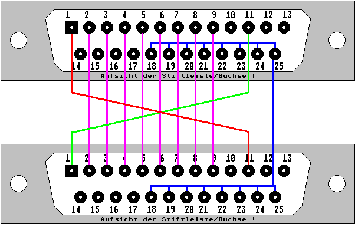

Previous
Next
TOC
Das STTrans Kabel
Im Lieferumfang des STBook war seinerzeit auch das Programmpaket
STTrans enthalten. Dieses diente dazu, das man Daten über die Cen-
tronicsschnittstelle mittels eines zweiten Computer übertragen
konnte.
Die Beschaltung des entsprechenden Datenkabels mit mindestens 11
Signalleitungen sehen Sie in der folgenden Abbildung:

Informationen zu STTRANS.PRG, PCTRANS.COM und PFTRANS.COM
---------------------------------------------------------
1. Sie benötigen eine Verbindung mit einem Null-Modem-Kabel zwischen
Ihrem Atari ST/STE/TT und PC oder Portfolio (dies geht natürlich nur
mit serieller Schnittstelle). Außerdem brauchen Sie das Programm
PCTRANS ladbar auf Ihrem PC oder PFTRANS auf Ihrem Portfolio.
2. Starten Sie PCTRANS oder PFTRANS auf dem DOS Prompt, starten Sie
dann STTRANS auf Ihrem ST/STE/TT.
Wenn Sie den zweiten seriellen
Port des PC benutzen wollen, können Sie optional den Parameter /c2
beim start von PCTRANS angeben.
3. Selektieren Sie in STTRANS den Modem-Port mit dem das Null-Modem-
Kabel verbunden ist (auf einem ST können Sie als seriellen Port nur
'Modem Port' wählen).
4. 19,200 baud wird automatisch voreingestellt. Um die Übertragungs-
geschwindigkeit zu verändern, wählen Sie bitte die gewünschte
Geschwindigkeit im 'Optionen' Menu von STTRANS.
Kapitel Das STTrans Kabel, Seite 1